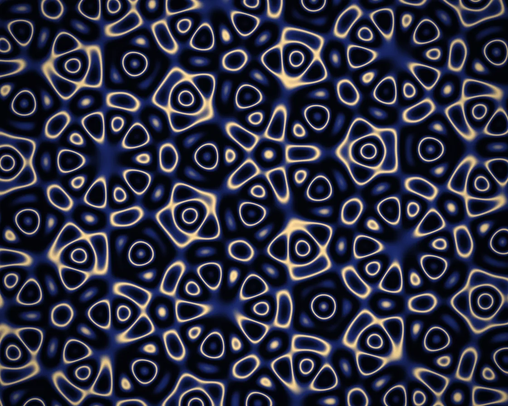

Quasicrystal
Quasicrystal is a WebGL effect: n rotated plane waves summed: ordered, symmetric, never repeating. One plain JavaScript file with no dependencies; add it with npx motion-library add quasicrystal.

Open it live, tune it and copy the code
What is Quasicrystal?
Gold rings and five-pointed rosettes bloom outward in a pattern that never repeats. The pointer shifts the waves’ phases, so rosettes melt and re-form.
How does Quasicrystal work?
Five stripe waves at k · 36° are summed, giving quasi-periodic interference; shifting all phases together streams it outward, and a triangle wave folds it into rings.
How do I add Quasicrystal to my website?
- In your project folder, run
npx motion-library add quasicrystal. It writesanimations/quasicrystal.js. Needs Node 18 or newer. - Import it and call it with a container element that has a size:
import fx from './animations/quasicrystal.js'; const stop = fx(document.querySelector('#hero')); - Call
stop()to clean up, for example when a component unmounts.
Every setting below is also a flag, so you can install it already tuned: npx motion-library add quasicrystal --waves 13.
What settings can I tweak?
| Setting | Flag | Default | Range | Step |
|---|---|---|---|---|
| Waves (symmetry) | --waves | 5 | 3 to 13 | 1 |
| Frequency | --scale | 70 | 20 to 140 | 1 |
| Speed | --speed | 1 | 0 to 3 | 0.05 |
Specifications
- Renderer
- WebGL
- Category
- Generative & math
- Dependencies
- None
- File size
- 6.2 KB, unminified
- Interactive
- Yes: it responds to the pointer
- Reduced motion
- Respects prefers-reduced-motion
- Licence
- MIT-0: use it anywhere, no credit needed
Source code
// Quasicrystal: N plane waves (stripes) at angles k·180°/N, all the same wavelength, added together. With 5 waves
// the sum has five-fold symmetry, which no periodic tiling can have, so the pattern is ordered but never repeats:
// the same interference that makes real quasicrystals. Shifting every wave's phase by the same amount makes the
// pattern seem to bloom outwards from the centre forever. The sum is folded (a triangle wave over its value), so
// each crossing of an integer level becomes a fine bright contour, and a duotone keeps it calm.
// The pointer (or an idle ghost) is a phason shift: each wave's phase moves by a different amount, so the tiles
// rearrange (rosettes melt and re-form elsewhere) while the five-fold order stays.
const PARAMS = { waves: 5, scale: 70, speed: 1 };
export default function (stage) {
const canvas = document.createElement('canvas');
canvas.style.cssText = 'position:absolute;inset:0;width:100%;height:100%;display:block';
stage.append(canvas);
const gl = canvas.getContext('webgl2', { antialias: false });
if (!gl) { stage.textContent = 'This needs WebGL2.'; return () => canvas.remove(); }
const reduce = matchMedia('(prefers-reduced-motion: reduce)').matches;
const vs = `#version 300 es
in vec2 p; void main() { gl_Position = vec4(p, 0, 1); }`;
const fs = `#version 300 es
precision highp float; out vec4 o;
uniform vec2 R, M; uniform float T, D, MA, u_waves, u_scale, u_speed;
float hash(vec2 p) { return fract(sin(dot(p, vec2(127.1, 311.7))) * 43758.5453); }
vec2 hash2(vec2 p) { return fract(sin(vec2(dot(p, vec2(127.1, 311.7)), dot(p, vec2(269.5, 183.3)))) * 43758.5453); }
float noise(vec2 p) { vec2 i = floor(p), f = fract(p); f = f * f * (3. - 2. * f);
return mix(mix(hash(i), hash(i + vec2(1, 0)), f.x), mix(hash(i + vec2(0, 1)), hash(i + 1.), f.x), f.y); }
float fbm(vec2 p) { float s = 0., a = .5; mat2 m = mat2(1.6, 1.2, -1.2, 1.6); for (int i = 0; i < 5; i++) { s += a * noise(p); p = m * p; a *= .5; } return s; }
void main() {
vec2 p = (gl_FragCoord.xy - .5 * R) / R.y;
float a0 = T * .02;
float N = floor(u_waves + .5), s = 0.;
vec2 ph = M * 14.; // the phason, from the pointer
for (int k = 0; k < 13; k++) {
float fk = float(k);
if (fk >= N) break;
float a = fk * 3.14159265 / N + a0, b = fk * 6.2831853 / N; // b: the wave's direction in 'perpendicular space'
s += cos(dot(p, vec2(cos(a), sin(a))) * u_scale + T * .9 + dot(ph, vec2(cos(b), sin(b))));
}
float v = (s + N) * .5; // 0 … N
float f = fract(v), band = mod(floor(v), 2.);
float tri = band < .5 ? f : 1. - f; // the fold: smooth, never jumps
vec3 ink = vec3(.012, .014, .035), mid = vec3(.1, .16, .42), hi = vec3(1., .86, .6);
float b2 = tri * tri;
vec3 col = mix(ink, mid, smoothstep(.0, .5, b2));
col = mix(col, hi, smoothstep(.45, 1., b2));
col *= 1. - .35 * smoothstep(.35, .9, length(p)); // fade the edges a touch
o = vec4(col, 1);
}`;
const sh = (t, s) => { const x = gl.createShader(t); gl.shaderSource(x, s); gl.compileShader(x); if (!gl.getShaderParameter(x, gl.COMPILE_STATUS)) throw new Error(gl.getShaderInfoLog(x)); return x; };
const prog = gl.createProgram(); gl.attachShader(prog, sh(gl.VERTEX_SHADER, vs)); gl.attachShader(prog, sh(gl.FRAGMENT_SHADER, fs)); gl.bindAttribLocation(prog, 0, 'p'); gl.linkProgram(prog);
if (!gl.getProgramParameter(prog, gl.LINK_STATUS)) throw new Error(gl.getProgramInfoLog(prog));
gl.useProgram(prog);
gl.bindBuffer(gl.ARRAY_BUFFER, gl.createBuffer()); gl.bufferData(gl.ARRAY_BUFFER, new Float32Array([-1, -1, 3, -1, -1, 3]), gl.STATIC_DRAW);
gl.enableVertexAttribArray(0); gl.vertexAttribPointer(0, 2, gl.FLOAT, false, 0, 0);
const U = {}; ['R', 'M', 'T', 'D', 'MA', 'u_waves', 'u_scale', 'u_speed'].forEach(n => U[n] = gl.getUniformLocation(prog, n));
let dpr = 1;
const resize = () => { dpr = Math.min(devicePixelRatio, 2); canvas.width = (stage.clientWidth || 1) * dpr | 0; canvas.height = (stage.clientHeight || 1) * dpr | 0; gl.viewport(0, 0, canvas.width, canvas.height); };
const ro = new ResizeObserver(resize); ro.observe(stage); resize();
// the pointer, in shader space (units of stage height, origin at the centre, y up); an idle ghost takes over
// when nobody is pointing. It passes through the centre (no shift: the perfect rosette) at about 1.5 s.
const ghostX = g => 0.16 * Math.sin((g - 1.5) * 0.27);
const ghostY = g => 0.12 * Math.sin((g - 1.5) * 0.19);
let gt = reduce ? 1.5 : 0, tx = ghostX(gt), ty = ghostY(gt), mx = tx, my = ty, ma = 0, lastMove = -1e9;
const toLocal = e => { const b = canvas.getBoundingClientRect(); return [(e.clientX - b.left - b.width / 2) / b.height, (b.height / 2 - (e.clientY - b.top)) / b.height]; };
const onMove = e => { [tx, ty] = toLocal(e); lastMove = performance.now(); };
const onLeave = () => { lastMove = -1e9; };
const onDown = e => { onMove(e); };
canvas.addEventListener('pointermove', onMove); canvas.addEventListener('pointerdown', onDown); canvas.addEventListener('pointerleave', onLeave);
let raf, t = 0, last = performance.now();
function frame(now) {
const dt = Math.min(0.05, (now - last) / 1000); last = now;
t += dt * PARAMS.speed * (reduce ? 0.05 : 1);
const live = now - lastMove < 2500;
if (!reduce) gt += dt;
if (!live) { tx = ghostX(gt); ty = ghostY(gt); }
const k = 1 - Math.exp(-dt * (live ? 14 : 3));
mx += (tx - mx) * k; my += (ty - my) * k; ma += ((live ? 1 : 0) - ma) * (1 - Math.exp(-dt * 4));
gl.uniform2f(U.R, canvas.width, canvas.height); gl.uniform1f(U.T, t); gl.uniform1f(U.D, dpr);
gl.uniform2f(U.M, mx, my); gl.uniform1f(U.MA, ma);
gl.uniform1f(U.u_waves, PARAMS.waves);
gl.uniform1f(U.u_scale, PARAMS.scale);
gl.uniform1f(U.u_speed, PARAMS.speed);
gl.drawArrays(gl.TRIANGLES, 0, 3);
raf = requestAnimationFrame(frame);
}
raf = requestAnimationFrame(frame);
return () => { cancelAnimationFrame(raf); ro.disconnect(); canvas.removeEventListener('pointermove', onMove); canvas.removeEventListener('pointerdown', onDown); canvas.removeEventListener('pointerleave', onLeave); gl.getExtension('WEBGL_lose_context')?.loseContext(); canvas.remove(); };
}